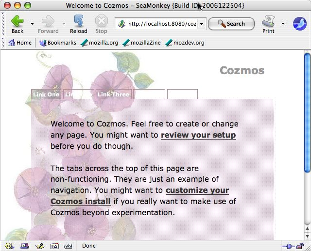
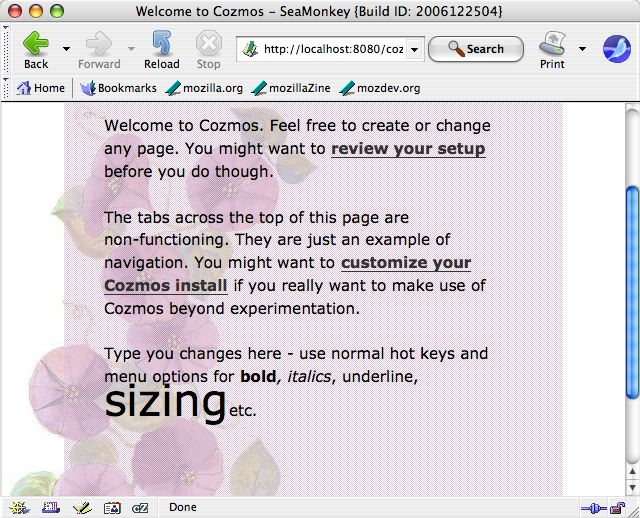

Sitemesh + WebDAV: making a better
content management system than a wiki
What is it ???
It is a content management system inspired by Ward Cunningham's Wiki idea. Whereas
most wiki implementations (and there are hundreds) use a textarea in a
web page for editing, with a command language for formatting, Cozmos
uses a full installed 'Thick' application for editing and pushes back
the pages using an extended web technology called WebDAV. Like
Wikis, Cozmos separates content from presentation/style. Unlike
Wikis the actual language of the content is HTML which is the
language of the web itself.
Don't be scared though, some pretty standard tools are used for
editing:
If you're a windows user, Internet Explorer and Microsoft Word are
tools you might have installed already that work.
If you're a Windows, Mac or Linux user, the Mozilla Foundations free
tool SeaMonkey
will do.
In time, we hope FireFox too gets a new menu item - 'Edit' - to allow
for the seamless transition from browsing a page, to editing it.
Look at this flow from browse to edit to browse again. Click on each
screen shot see them full sized:
 
Why?
As with most open source, an itch is being scratched. Its not
uncommon to hear that people are sick of editing in textareas in web
pages, using obscure languages for *bold* /italics/ and _underline_ (it
is not even if those three are standardized over all Wiki
implementations). Even the push in the Web2.0 era to Rich editing
components in web pages does not placate all. Thus this real editor
solution is being developed after many years of discussion inside ThoughtWorks. Cozmos is going
to spawn multiple implementations of the same idea. The PHP community
(with PhpMesh) are poised to deliver a quick solution, and the
Rby/Rails communit will do the same. In the end though perhaps this
"Diki" (DAV Wiki - geddit?) idea may stick. Though there's some
suggestion that it should be coined Daviki rather tha Diki.
Quick Start
Install the Cozmos web app into Apache's Tomcat server
Alpha verions of
Cozmos available here - http://cozmos.codehaus.org/wars/
(Mortbay's Jetty will work too, but you must have JETTY_HOME set)
For SeaMonkey editing, download and patch it
1) Go get a recent version of SeaMonkey
Unfortunately, you have to make a modification to SeaMonkey after
installing it.
2) Install it the normal way.
3) Go to to a directory called 'chrome' that contains a file called
'comm.jar' in a command shell
4) Do jar -xf comm.jar content/editor/editorApplicationOverlay.js
5) Edit that file in Notepad, Textpad, Vi, Emacs etc..
6) Change ....
function editPage(url, launchWindow, delay)
{
// Always strip off "view-source:" and #anchors
url = url.replace(/^view-source:/, "").replace(/#.*/, "");
to ....
function editPage(url, launchWindow, delay)
{
// Always strip off "view-source:" and #anchors
url = url.replace(/^view-source:/, "").replace(/#.*/, "");
if (url.substr(0,4) == "http")
{
if (url.indexOf("?") > 0)
{
url = url + "&editMode=true";
}
else
{
url = url + "?editMode=true";
}
}
7) Do jar -uf comm.jar content/editor/editorApplicationOverlay.js
Now your SeaMonkey has been modified. It allows the server side Cozmos
to recognise the differences betweeen a page request from the browser
and one from the composer (editor) sides of SeaMonkey. We hope to
see the SeaMonkey team build in such functionality in future.
It is important to note that there are no permissions presently for
editing of pages. This will change in future versions of Cozmos.
We will supply a script to modify SeaMonkey for you in future versions.
Edit a page on the site with MS Word
While browsing the Cozmos application site
(http://localhost:8080/cozmos?) with Internet Explorer, chose
"Edit page with Microsoft Word" from the File menu. This used to
be mapped to Ctrl-E (pity its not). When finished choose the
regular Save Icon.
Edit a page on the site with SeaMonkey
While browsing the Cozmos application site
(http://localhost:8080/cozmos?) with SeaMonkey, hit Ctrl-E (Apple-E for
Mac users) and make changes to the page. Hit the "Publish"
icon in the toolbar to push the changes back to the server.
What next ?
Permissions for pages / secure login for changes
Linking to Subversion for automatic storage of page history
Begging of numberous Mozilla committers/leads to make changes to some
components they own (Firefox, SeaMonkey, Composer)
Project INFO
People, repos, lists, sites ... all detailed here:
http://xircles.codehaus.org/projects/cozmos
Cozmos depends significantly on two pre-existing
open source projects.
SiteMesh
is the best open source component you never heard of,
and webdav-servlet
is a very flexible value add for Java's web capability.
This work is licensed under a some minimal BSD derivative
{kind=link}
{kind=link}
{kind=link}